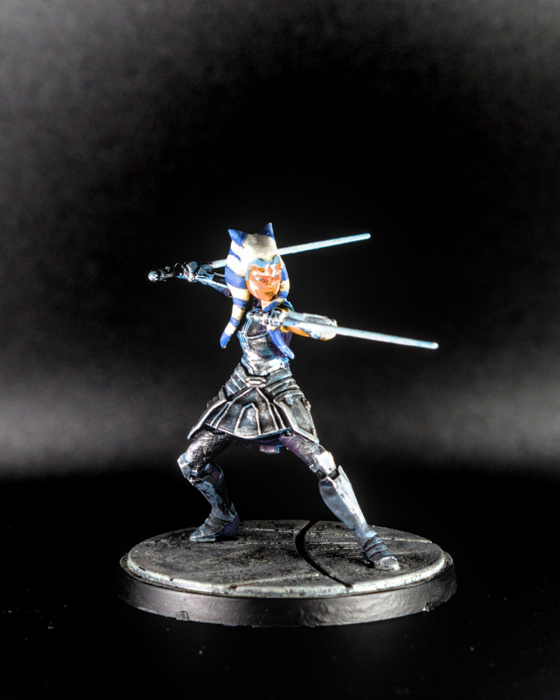
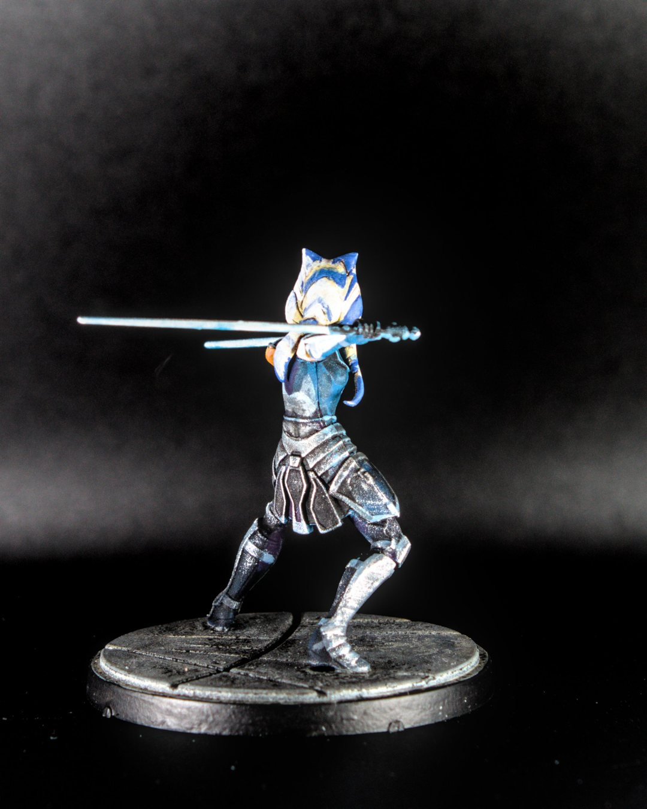

Star Wars Shatterpoint Aug 17, 2025
Ahsoka Tano
💫 “I am no Jedi.” 💫
Ahsoka Tano is a former Jedi Padawan who left the Order to follow her own path. Known for her dual lightsabers and calm-but-deadly fighting style, she’s become one of the most skilled and independent heroes in the galaxy.
For this mini, I went with bright, clean colors on the face and added edge highlighting on her armor to make it pop against the darker tones. The lekku stripes were a fun challenge, and the subtle blue glazing on her sabers ties it all together.
#MiniaturePainting #Miniatures #Painting #Art #Hobbies #boardgames #StarWars #AhsokaTano #Shatterpoint #Warhammer #best4minis #best.of.miniatures @best4minis @best.of.miniatures @atomic_mass_transmitions